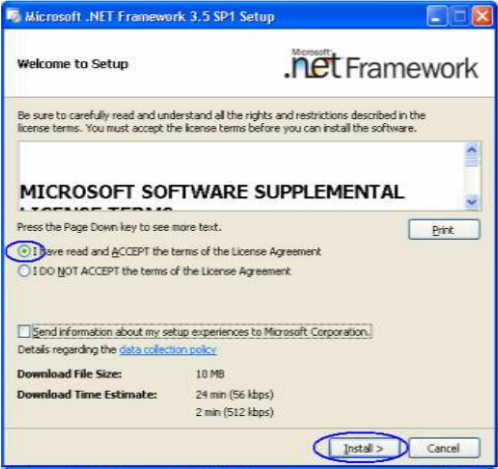
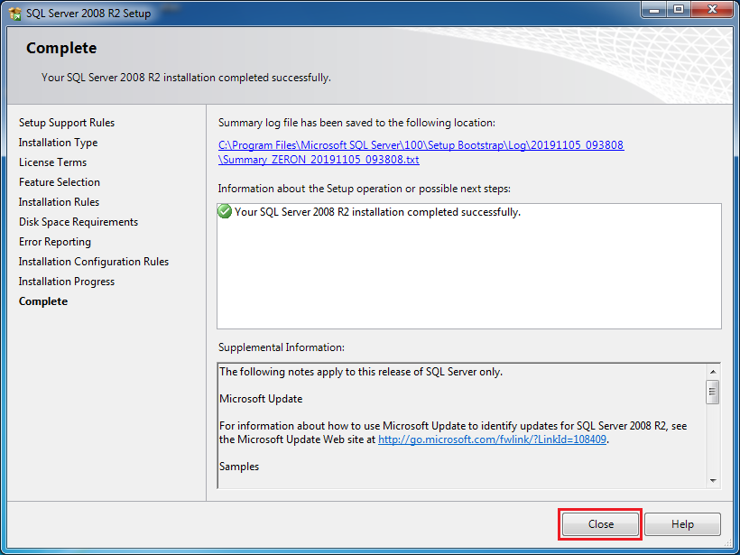

Instalasi Software Pendukung
Windows 7/8
Install Microsoft .Net Framework
Pertama, install Microsoft .Net Framework sebagai berikut:
- Cari file Microsoft .Net Framework yang sudah Anda download. Jika belum download silahkan download dahulu disini.
- Klik 2x pada file Microsoft .Net Framework, akan muncul jendela seperti di bawah pilih I have read and ACCEPT the terms of the License Agreement. Kemudian klik Install.
 - Instalasi sukses, klik Exit.

Catatan : apabila installl Microsoft .Net Framework tidak berhasil, abaikan dan lanjutkan ke tahapan berikutnya di bawah ini.
Install Microsoft SQL Server Express
Kedua, install Microsoft SQL Server Express sebagai berikut:
- Cari file Microsoft SQL Server Express yang sudah Anda download. Jika belum download silahkan download dahulu disini.
- Klik 2x pada file Microsoft SQL Server Express, akan muncul jendela seperti di bawah, silahkan ditunggu.

- Klik Yes.

- Klik New installation or add features to an existing installation.
- Centang checkbox I accept the license terms dan klik Next.

- Klik Next.
- Klik Next.

- Klik Next.

- Pilih Windows authentication mode, dan klik Next.
- Klik Next.


- Install sukses, Klik Close.

Install Microsoft SQL Server Management Studio Express
Ketiga, install Microsoft SQL Server Management Studio Express sebagai berikut:
- Cari file Microsoft SQL Server Management Studio Express yang sudah Anda download. Jika belum download silahkan download dahulu disini.
- Klik 2x pada file Microsoft SQL Server Management Studio Express, akan muncul jendela seperti di bawah, silahkan tunggu.
- Klik Yes

- Klik New installation or add features to an existing installation.

- Klik Next.

- Centang checkbox I accept the license terms, dan kemudian klik Next.
- Klik Next.
- Klik Next.
- Install sukses, Klik Close.

Selesai
Selanjutnya install Sotware OtomaX Free Edition, selengkapnya klik disini.
Catatan: Tata cara di atas berlaku untuk Windows 7/8 32 bit maupun 64 bit.